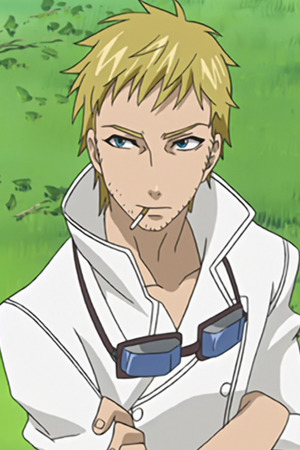

|  |
Baldroy |
- Black Butler
- Black Butler Recap
- Black Butler: His Bulter, Performer
- Black Butler 2
- Black Butler 2 Specials
- Black Butler Picture Drama
- Black Butler: Book of Circus
- Black Butler: Book of Murder
- Black Butler: Book of the Altantic
|
Baldroy is the household cook of the Phantomhive manison. He is an American veteran. He is extremely loyal to Ciel Phantomhive and a lit bit feared by Sebastian Michaelis. He cooks with a flamethrower or blowtorch. |
 |
Luke Storm |
|
Luke Storm is a member of the military of the Kingdom of Leinwan. |
 |
Pantherlily |
- Fairy Tail
- Fairy Tail OVA
- Fairy Tail the Movie: Phoenix Priestess
- Fairy Tail (2014)
- Fairy Tail OVA (2016)
- Fairy Tail Movie 2: Dragon Cry
|
Pantherlily is an Exceed that works for the kingdom of Edoras. He was the first commander of Royal Armor. He is a grumpy disposition and detests noisy people. |